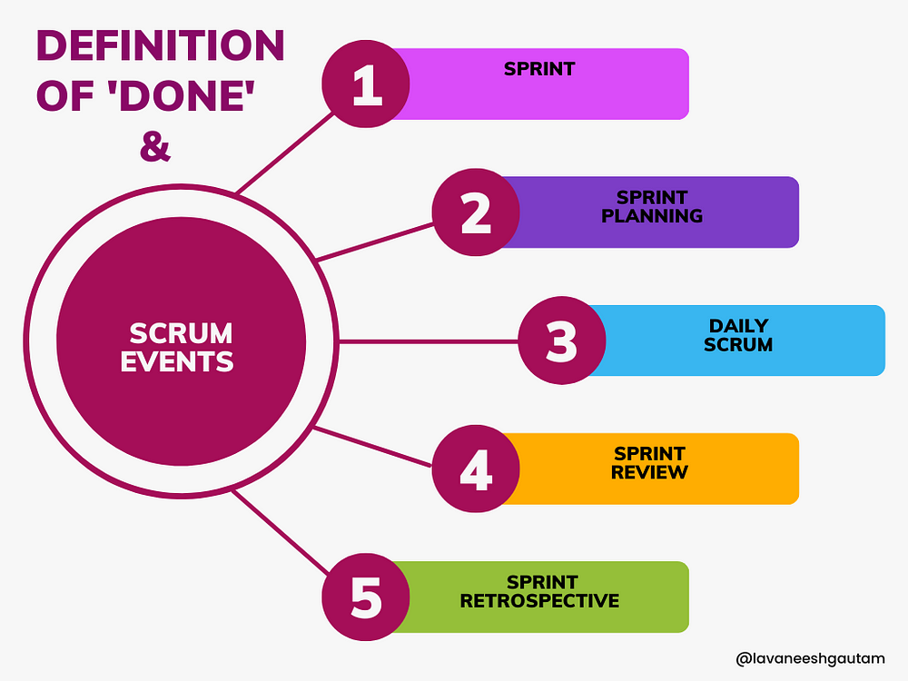

Understanding the Definition of Done in Agile
A DoD is a set of criteria that a product increment must meet for the team to consider it complete and ready for customers. It is a shared understanding among the team members of when a product increment is ready for release, even when the increment is large and consists of many items. By clearly defining what “done” means to the project, an Agile team can focus on delivering value with every sprint and minimizing rework.
It is important to note that one person does not create the Definition of Done. Instead, it is agreed upon by the entire project team, including developers, testers, product owners, and other stakeholders. This ensures a smoother process during sprints since everyone is using the DoD as a guide alongside any checklists before marking an item as complete.
“If you deal with hand-offs to other teams, ensure your definition of done accounts for anything needed to ensure the other team is successful,” says Atlassian’s Modern Work Coach Mark Cruth. “Work with the other teams in the value stream to find out what you should be including in your DoD to support them.”
Definition of Done Examples
The DoD for a project varies depending on the type of project and the team involved. The following DoD examples illustrate how these definitions differ between project types:
On a mobile app development project, the DoD may include:
On a software development project, example criteria in the DoD could include:
A generic project might have these as part of the DoD:
Definition of Done vs. Definition of Ready
The DoD is a set of high-level criteria that defines when a product increment is complete. It ensures the quality and consistency of a deliverable. Teams typically use the DoD at the end of a sprint when checking the quality of a product increment.
In contrast, the definition of ready (DoR) is a set of low-level and specific criteria that applies only to product backlog items. The DoR defines when a backlog item is ready for a team to work on in an upcoming sprint. A team uses the DoR during the backlog refinement process at the start of a sprint.
Why is the Definition of Done Important?
Having a DoD is vital to delivering a quality product that customers want because it clarifies when an item can be marked complete and is ready to be included in a product increment. A well-crafted DoD offers the following benefits: